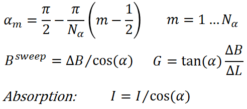

| EPR Imaging Toolbox collection user manual |
Iradon toolbox Inverse Radon transformation image reconstruction toolbox Relation between Radon transformation and EPRI Spatial imaging Spectral imaging 
Three parameters of spectral imaging are number of spectral angles Nα,
image spatial support ΔL and image spectral support ΔB. The resulting image has physical dimensions of ΔL and ΔB. The equal spectral angle gradient scheme given above is not the best and is given as an example. ΔB that covers all regions of EPR spectrum with significant intensity is required for proper reconstruction. For a single line spectrum ΔB of 5-7 line widths is recommended. |